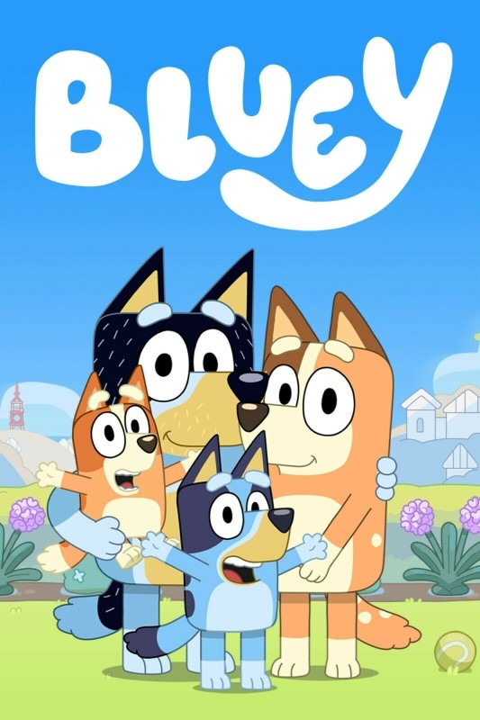

Bluey


"Bluey" es una serie de televisión animada australiana que se estrenó en 2018 y ha ganado una gran popularidad tanto entre niños como entre adultos. La serie sigue las aventuras de una perra azul llamada Bluey y su familia, que incluye a su madre, su padre y su hermana.
Lo que hace que "Bluey" sea tan especial es su enfoque en la imaginación y la creatividad de los niños, así como en la importancia del juego y la interacción familiar. Cada episodio presenta situaciones cotidianas en las que Bluey y su familia se embarcan en emocionantes juegos imaginativos, que a menudo tienen lecciones importantes sobre el trabajo en equipo, la resolución de problemas y la empatía.
La animación de "Bluey" es vibrante y colorida, y los personajes son entrañables y muy bien desarrollados. La serie también destaca por su humor inteligente y atractivo tanto para niños como para adultos, lo que la convierte en un programa familiar perfecto.
En resumen, "Bluey" es una serie encantadora que promueve valores positivos y fomenta la creatividad y la imaginación en los niños. Es una opción ideal para disfrutar en familia y seguramente seguirá siendo un éxito por muchos años más.